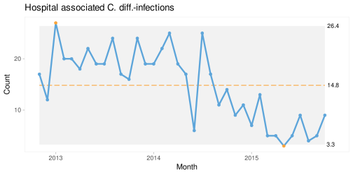
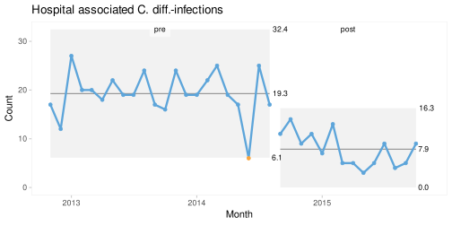

Chapter 18 Common Pitfalls to Avoid
While SPC is a powerful framework for data-driven quality improvement, its effectiveness can be undermined by a number of common missteps. Misinterpretation of data, inappropriate use of run and control charts, and faulty assumptions can lead to wasted effort or missed opportunities – and may ultimately erode trust in SPC itself.
This chapter outlines some of the most common pitfalls and how to avoid them.
18.1 Data issues
SPC charts are only as good as the data on which they are based. Poor data quality – such as inaccurate measurements, inconsistent definitions, or data collected under varying conditions across time or location – can significantly compromise their reliability.
Particular attention must be paid to how subgroups are formed. Subgroups consist of the data elements that make up each plotted data point, and the way data are sampled and grouped has a major influence on the chart’s ability to distinguish between common cause and special cause variation. Poor subgrouping may generate false signals or obscure meaningful ones. For this reason, we devote an entire chapter (19) to rational subgrouping.
Time spent developing clear operational definitions and rational subgrouping strategies is rarely wasted. Investing effort at this stage ensures that data are meaningful, comparable, and suitable for analysis.
18.2 Signal fatigue from over-sensitive SPC rules
Originally, control charts relied on a single rule: the 3-sigma rule. Over time, numerous supplementary rules have been developed to increase sensitivity to smaller shifts and other patterns of non-random variation. These include the Western Electric rules, Nelson rules, Westgard rules, and various sets of runs rules.
While it may be tempting to apply many rules in order to detect every possible signal, this approach comes at a cost. Additional rules increase sensitivity, but they also increase the risk of false alarms. This trade-off is discussed in more detail in Appendix C, Two Types of Errors When Using SPC.
Some commonly used rule sets are particularly prone to false signals. For example, a widely used set of run chart rules – including tests for trends, shifts, and run counts (Perla et al. 2011) – has been shown to produce a very high false positive rate. In a run chart with 24 data points, the probability of at least one false signal may approach 50% (Anhøj 2015). A major contributor is the “trend rule”, defined as five or more consecutive data points increasing or decreasesing. Such short trends are common even in random data and are therefore unreliable indicators of change (Davis and Woodall 1988).
Another related pitfall is the deliberate tightening of control limits in an attempt to increase sensitivity. This often arises from an incorrect use of the overall standard deviation when calculating limits (Wheeler 2010, 2016). As emphasised throughout this book, control limits should be based on within-subgroup variation, not overall variation. Using the overall standard deviation incorporates special cause variation and inflates the limits, which may then prompt misguided attempts to narrow them artificially.
To avoid signal fatigue, practitioners should use a small, carefully selected set of rules. The three rules recommended in this book – the 3-sigma rule and the two runs rules – provide a balanced approach, offering reasonable sensitivity while maintaining an acceptable false alarm rate.
18.3 Confusing the voice of the customer with the voice of the process
Effective SPC requires listening to two distinct “voices”: the voice of the customer and the voice of the process. Confusing the two can lead to inappropriate actions and poor decisions.
The voice of the customer reflects desired performance and is typically expressed through specification limits or targets. The voice of the process, by contrast, reflects actual performance and capability, as revealed by the data and the control limits.
For example, a target may specify that an emergency caesarean section should be completed within 30 minutes. It may be tempting to treat any case exceeding this threshold as a special cause requiring investigation. However, without considering whether the process is stable and what it is capable of, such an approach is misleading.
Unacceptable outcomes may arise from stable processes, and acceptable outcomes may occur in unstable ones. Before acting on individual observations, we must determine whether variation is due to common causes or special causes. This distinction is crucial, as the appropriate response differs fundamentally.
Common cause variation requires changes to the system itself, while special cause variation requires investigation of specific events. The ultimate goal is to establish stable processes that consistently deliver acceptable outcomes. The relationship between these two “voices” can be summarised as follows:
| Process Stable | Process Unstable | |
|---|---|---|
| Customer Satisfied | Maintain and monitor | Stabilise the process |
| Customer Unsatisfied | Redesign the process | Redesign and stabilise |
18.4 Automatic rephasing
Rephasing involves splitting an SPC chart and recalculating the centre line and control limits after a sustained shift has been identified.
When done deliberately and with understanding of the underlying process, rephasing can be useful. Figure 18.1, for example, correctly separates two stable periods before and after an intervention.
qic(month, n,
data = cdi,
chart = 'c',
part = period,
title = 'Hospital associated C. diff.-infections',
ylab = 'Count',
xlab = 'Month')
Figure 18.1: Hospital infections – rephasing done right!
However, some software systems perform automatic rephasing whenever a shift is detected. This can lead to misleading results.
In Figure 18.2, automatic rephasing occurs too early, incorrectly assigning data points to the post-intervention period. This distorts the centre lines and control limits and may even create false signals of instability.
qic(month, n,
data = cdi,
chart = 'c',
part = 22,
part.labels = c('pre', 'post'),
title = 'Hospital associated C. diff.-infections',
ylab = 'Count',
xlab = 'Month')
Figure 18.2: Hospital infections – rephasing done wrong!
Automatic rephasing removes essential human judgement from the process. For this reason, we strongly discourage its use. Rephasing should always be a deliberate decision, based on a clear understanding of the process and any associated interventions.
Rephasing may be appropriate when the following conditions are met:
- there is a sustained shift in data,
- the cause of the shift is known,
- the shift is in the desired direction, and
- the shift is expected to persist.
If these conditions are not met, the focus should remain on understanding the causes of variation.
18.5 The control chart vs run chart debate
A common misconception is that control charts are inherently superior to run charts (e.g. Carey (2002)). Similarly, the two are sometimes presented as fundamentally different methods (e.g. Perla et al. (2011)). We disagree with both views.
Run charts and control charts are best understood as variations of the same underlying concept: SPC charts – time series charts that use statistical rules to detect non-random variation.
The main difference is that control charts include control limits, while run charts do not. Control limits help detect large, sudden changes and provide a visual representation of process variation. Runs analysis, on the other hand, is particularly effective for detecting smaller, sustained shifts and trends.
These approaches are complementary rather than competing. In fact, some traditional control chart rules – such as the Western Electric rule for runs – are based on the same principles as runs analysis.
Run charts also offer practical advantages. They are simpler to construct, especially without specialised software, and they rely on fewer assumptions. Using the median as the centre line ensures a balanced division of data and reduces sensitivity to distributional assumptions.
For improvement work, where the goal is to detect sustained changes, run charts are often sufficient. Control limits can be added later when the focus shifts to monitoring stability and detecting large, sudden changes.
18.6 Assuming a one-to-one link between PDSA cycles and data points
A final source of confusion arises from the relationship between SPC charts and Plan-Do-Study-Act (PDSA) cycles. Because the two are often taught together, it is sometimes assumed that each data point on an SPC chart corresponds directly to a specific PDSA cycle.
In practice, this is rarely the case. PDSA cycles typically operate on short timescales – minutes, hours, or days – while SPC charts often reflect aggregated data over longer periods – days, weeks, or months.
As a result, signals on an SPC chart cannot always be directly attributed to individual PDSA cycles, and the absence of signals does not necessarily imply that a change has failed.
SPC and PDSA serve complementary but distinct purposes. SPC provides a broader view of process behaviour over time, while PDSA supports rapid, iterative testing and learning. Recognising this distinction helps ensure that both methods are used effectively in practice.